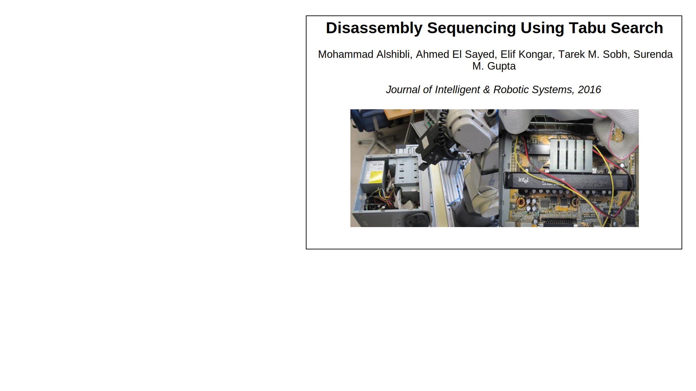
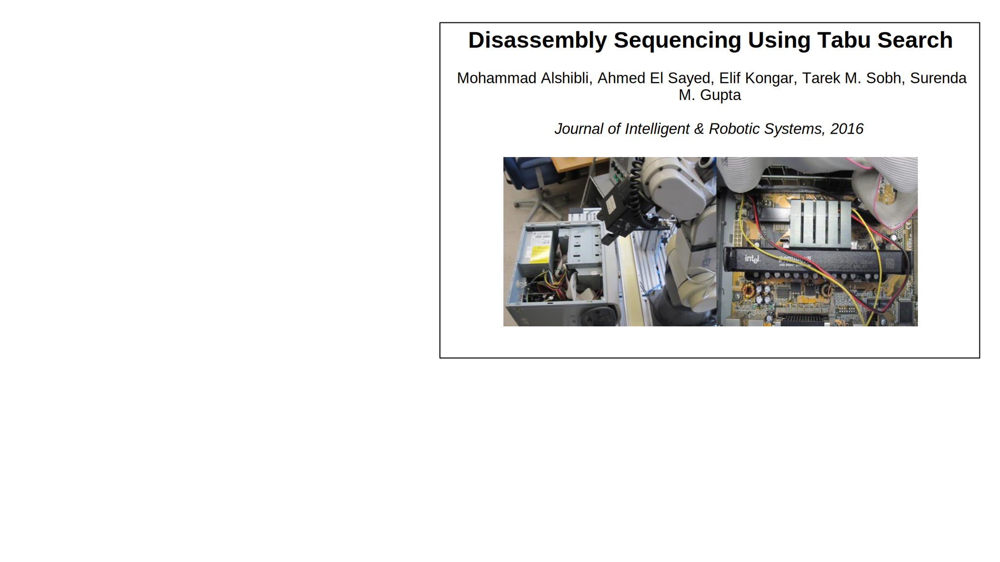
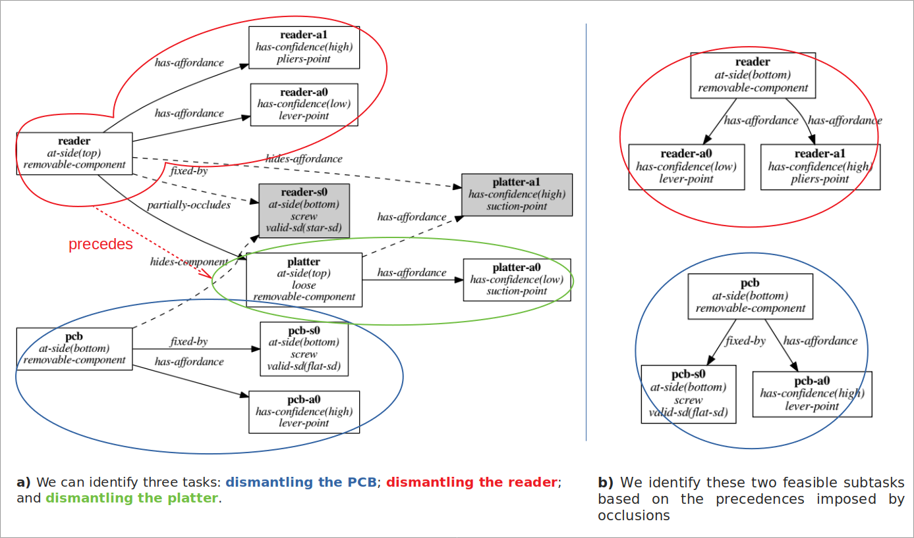
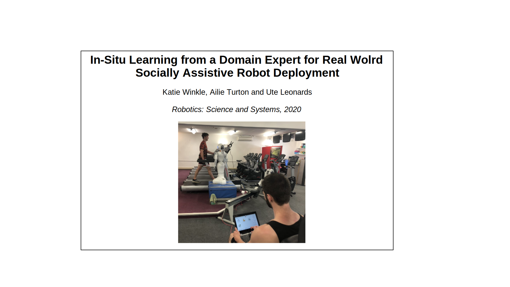
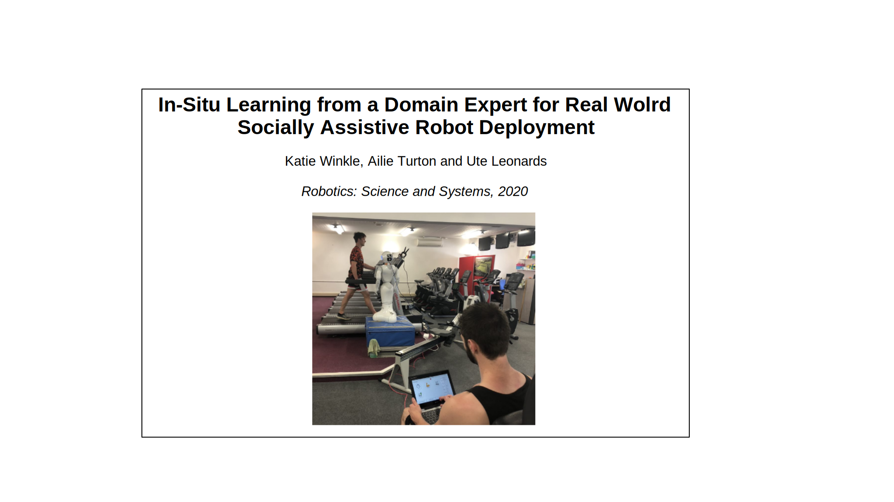

Ph.D. Dissertation
New Methods for Bridging Symbolic-Geometric Reasoning, Addressing Uncertainty and Action Learning in Task Planning for Robotics
Advisors:
July 25th, 2024
Motivation


Objectives


Contributions


Planning and Execution

Dual-arm Symbolic-motion Planning


A. Suárez-Hernández, G. Alenyà, and C. Torras. "Interleaving hierarchical task planning and motion constraint testing for
dual-arm manipulation." In IROS 2018, pp. 4061–4066.
Addressed problems
- Symbolic-geometric reasoning (O1)
- Partial observability (O3)


Literature


Specific contributions


Quantitative experiments

Qualitative experiment
Planning in Face of Stochastic Outcomes


A. Suárez-Hernández, C. Torras, and G. Alenyà.
"Practical resolution methods for MDPs in robotics exemplified
with disassembly planning." In IEEE RA-L (2019), pp. 2282–2288.
Addressed problems
- Handle uncertain outcomes (O2)
- Handle partial observability (occlusions) (O3)


Literature

 

Specific contributions

More on subtask selection
More on determinization

Alpha-Cost Transition Likelihood determinization


Results
Leveraging Simulators to Minimize Risk
A. Suárez-Hernández, T. Gaugry, J. Segovia-Aguas,
A. Bernardin, C. Torras, M. Marchal, and G. Alenyà.
"Leveraging Multiple Environments for Learning and Decision Making:
a Dismantling Use Case.” In: IEEE/RSJ IROS. 2020, pp. 6902–6908.
Problems addressed


Literature


Specific contributions


Model resolution

Algorithm visualization (test+target)
Algorithm visualization (only target)
Experiments
Learning Planning Operators


STRIPS Action Discovery
A. Suárez-Hernández, J. Segovia-Aguas, C. Torras, and
G. Alenyà. “STRIPS action discovery.” In: arXiv preprint arXiv:
2001.11457 (2020). Presented in the 1st Workshop on Generalization in
Planning at the 2020 AAAI conference.
Addressed problems
- Learning STRIPS state traces (O4)
- Minimal information


Literature


Specific contributions
Results
INtuitive PROgramming

A. Andriella, A. Suárez-Hernández, J. Segovia-Aguas,
C. Torras, and G, Alenya. "Natural teaching of robot-assisted
rearranging exercises for cognitive training." In ICSR 2019, pp. 611–621
A. Suárez-Hernández, A. Andriella, A. Taranović,
J. Segovia-Aguas, C. Torras, and G. Alenyà. "Automatic
learning of cognitive exercises for socially assistive robotics."
In RO-MAN 2021, pp. 139–146
Addressed problems

Literature
 



Specific contributions
Hypotheses
- H1: teachers from the minimum feedback group will require more traces to complete the exercises
- H2: more teachers in the full feedback group will teach all exercise rules
Results
Online Action Recognition through Unification

A. Suárez-Hernández, J. Segovia-Aguas, C. Torras, and
G. Alenyà. "Online Action Recognition." In: 2021 AAAI Conference,
pp. 11981–11989
Addressed problems
- Real-time STRIPS action learning
- Learning even with Partial Observability
- Few-shot performance
Specific contributions

Results (full observability)

Results (partial observability)


INtuitive PROgramming 2
A. Suárez-Hernández, A. Andriella, C. Torras,
and G. Alenyà. "User Interactions and Negative Examples
to Improve the Learning of Semantic Rules in a Cognitive
Exercise Scenario." In IROS 2023, pp. 7953–7960.
Addressed problems
- Learn more complex exercises
- Until now: robot hasn't been very proactive
- Learn goals?
Specific contribution


Prompting criterion


Quantitative results

Qualitative results
Conclusions
- Broad set of topics
- Key tools:
- Simplification
- Beyond-symbolic reasoning
- Hands-off learning
- Many more challenges! Multi-agent, cooperative, etc.